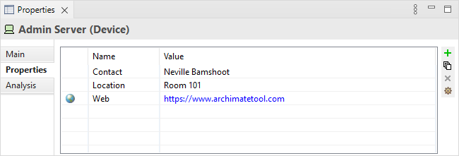
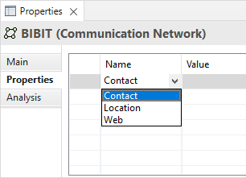
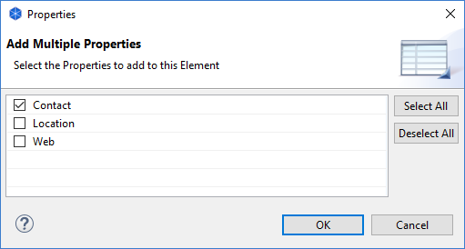

用户属性
可以从属性窗口中的“属性”标签中创建和管理用户属性。
属性标签页

用户属性
此标签允许您向概念、模型、文件夹或视图或对象添加任意用户属性或属性。例如,您可能希望添加诸如“成本”、“位置”、“持续时间”、“时间”、“链接”等信息。属性以名称/值对的形式存储。同名属性可能在模型或对象中出现多次。值作为自由文本输入。
如果属性的值以“http://”、“https://”、“file://”或“ftp://”开头,则它将显示为蓝色以表示超链接,并在左侧列中显示一个图标。双击图标会在浏览器中打开链接。
添加新用户属性条目:
- 单击属性表右侧的“新建”工具栏按钮,或从右键单击菜单中选择“新建”,或在表的空白区域双击
- 在表格单元格中编辑属性的名称。如果模型中存在现有属性,则可以从表格单元格中的组合框中选择其中一个

- 在“值”单元格中编辑属性的值。如果模型中的其他位置存在给定属性名称的现有属性,则可以从单元格编辑器中的组合框中选择其中一个值
将现有用户属性名称更改为新名称或现有名称:
- 在属性表中的属性名称单元格中单击并输入新名称
- 如果模型中存在现有属性,则可以从单元格编辑器中的组合框中选择其中一个
删除属性条目:
- 选择要删除的属性条目
- 单击属性表右侧的“删除”工具栏按钮,或从右键菜单中选择“删除”
注意: 在属性窗口中向对象添加新属性意味着它变成了同一模型中具有用户属性的所有对象的可重用属性。在属性窗口中删除属性仅会从所选对象中删除它。如果其他对象中使用了它,它仍然可用。
通过拖放重排序属性条目:
- 在属性表中选择要重新排序的属性条目
- 在属性表中拖放条目以重新排列它们
对属性名称排序:
- 单击“名称”表列标题
- 属性名称将按字母顺序排序
添加超链接属性条目:
- 在属性表中选择要用作超链接的属性条目
- 编辑值,使其包含以“http://”、“https://”或“ftp://”开头的URL
- 双击左侧列中的图标以在浏览器中打开链接
使用现有属性名称添加新属性条目:
- 单击属性表右侧的“新建多个...”工具栏按钮,或从右键单击菜单中选择“新建多个...”
- 从对话框中选择要添加的属性

- 按OK,然后在属性表中编辑新值
全局管理和查看用户属性:
- 单击属性表右侧的“管理”工具栏按钮,或从右键单击菜单中选择“管理”
- “属性管理器”对话框显示模型中全局使用的所有属性键及其使用次数:

- 您可以在此处删除属性。使用它的所有对象中的属性及其声明值都将被删除
- 您可以通过在“新名称”列中编辑名称来重命名属性。使用它的所有对象中将重命名所有属性名称
多选择对象
您可以通过在模型树或视图中选择多个对象来添加、删除和修改多个对象的属性。如果选择多个对象,则表中仅显示具有相同属性名称的属性。如果这些属性的值不同,则显示“(多个值)”。请注意,多选情况下不可用拖放重新排序和排序。